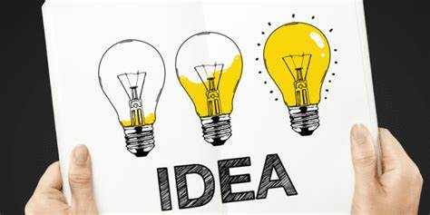

Sluislab Amsterdam

The CGI program is based on the characteristics of the design method of Design Thinking.
Design Thinking is a design methodology that provides a solution-based approach
to problem solving. It is extremely useful in tackling complex and wicked problems
because it is working on five different stages:
- it pushes you to understand the human needs involved - Empathize;
- to Define and re-frame the problem;
- to create many ideas in brainstorming session – Ideate;
- and to adopt a hands-on approach in Prototyping and Testing.
The third stage of this process – Ideation – is often considered the most tricky one, but also the most fun! After you have grown to understand your users and their needs, and defined their problem into a “How Might We” statement, it is now time to start thinking outside of the box and finally find some solutions. There are hundreds of Ideation techniques you and your team can use (see links below).
At the beginning of this stage it is important to get as many ideas or solutions as possible,
use Divergent Techniques to stimulate the free thinking and expand your perspectives.
IMPORTANT: Don’t be scared to go crazy!
Once you are finally submerging in post-its, you can start using tools that can help you to
investigate and test your ideas – Convergent Techniques.
I prepared here for you two exercises on Miro: one divergent and one convergent.
• Ideation Techniques: What If Innovation Cards and Tech & Trends Matrix (Board of Innovation)
• The Six Thinking Hats (De Bono, 1985)
Copy-paste the table on your team space and follow the instructions.
IMPORTANT! For every ideation techniques there are three main rules:
- Get wild!
- Don’t judge!
- HAVE FUN!
Links to more ideation techniques:
Board of Innovation Creatingminds.org Ignitec